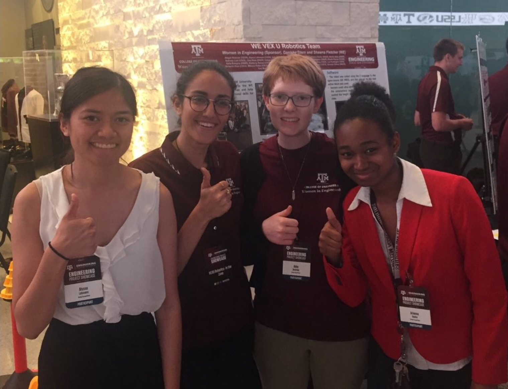
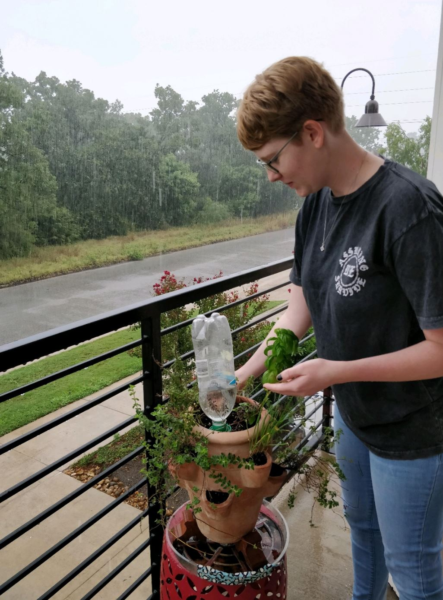

I've been interested in STEM for as long as I can remember, and early in high school I was most interested in science; I led the Science Olympiad club. In exchange for a space to run experiments, I made a deal with the engineering teacher that I would take the introductory engineering class. After that, I was hooked on engineering in general and planned to study Chemical Engineering. My freshman year of college, I realized that I enjoyed programming much more through the introductory programming course and my experience on the VEX-U robotics team. I ended up majoring in computer science instead!
My internships have been crucial in narrowing down my specific proffessional interest. My first internship at H-E-B's San Antonio Development Center made me particularly fascinated by full-stack software engineering due to the vast amount of tools and skills utilized; I prefer learning within a wide scope rather than becoming an expert in a narrow field. Cybersecurity has appealed to me based on the classic image of defenders in hoodies typing in dark rooms, and this fascination continued with my internship the next year with their Application Security engineering team. This was a fun combination of cybersecurity concepts and full-stack software engineering, and what I'd like to continue doing professionally.
In my personal life, I've become more interested in improving my physical and mental health. In pursuit of this, I've gone vegetarian and thoroughly enjoyed learning the new approach to cooking and trying new recipes, some of which using herbs from my small garden (when they are still alive). I've also realized that I enjoy exercising through yoga and interval training, sometimes while listening to books and interesting podcasts. I'm hoping to continue improving my health in this way going forward, as well as getting a dog and becoming more involved in a local shelter and/or garden.
